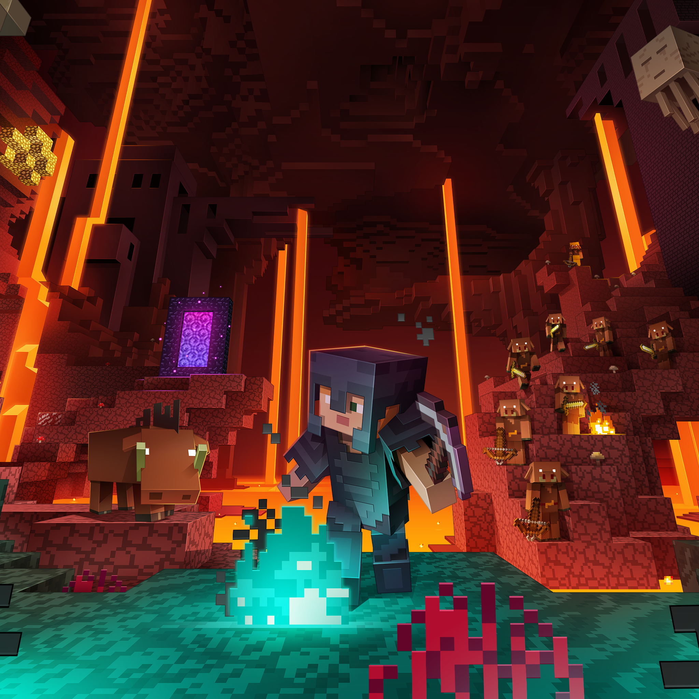
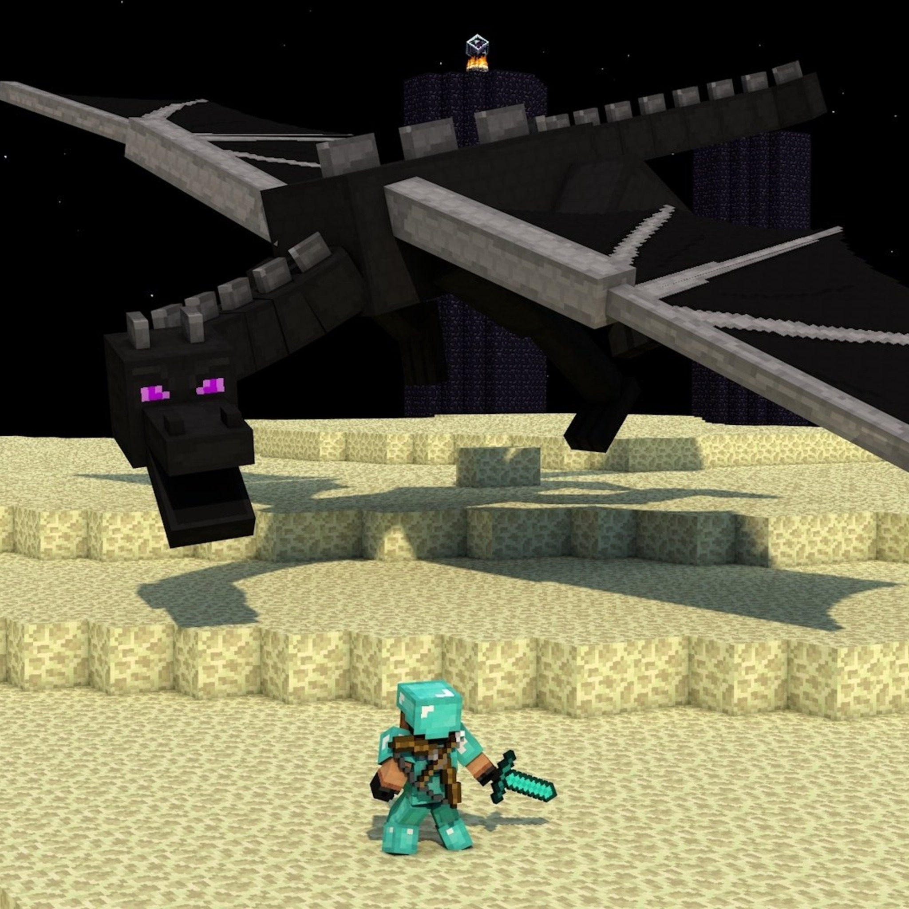

Świat Minecrafta
Generowany świat
Minecraft oferuje świat generowany proceduralnie, pełen różnorodnych biomów:
- Lasy
- Pustynie
- Dżungle
- Góry
- Oceany

Tryby gry
Survival
Tryb przetrwania, w którym musisz zdobywać zasoby i walczyć z mobami.
Creative
Tryb twórczy z nieograniczonymi zasobami i możliwością latania.
Hardcore
Trudny tryb survival z tylko jednym życiem.
Adventure
Tryb przygodowy z ograniczonymi możliwościami niszczenia bloków.
Wymiary
Nether
Piekielny wymiar pełen lawy i niebezpiecznych mobów.
End
Tajemniczy wymiar, w którym czeka ostateczny boss - Smok Endu.
